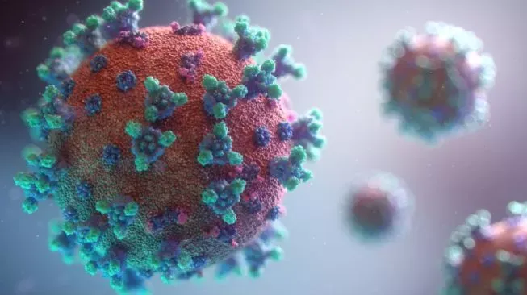

Daftar Teknologi Informasi sebagai Solusi untuk Mengatasi Pandemi Covid-19
10 Januari 2021 Oleh Ahnafudin
Pandemi Covid-19 di Indonesia sudah berlangsung sejak Maret 2020. Hingga saat ini, pandemi ini masih berkecamuk di Indonesia.
Pemerintah Indonesia telah melakukan banyak hal untuk menangani pandemi ini. Berbagai lapisan masyarakat juga ikut berusaha untuk mengendalikan jumlah virus agar tidak menyebar luas di pelosok Indonesia.
Pemerintah telah memberikan berbagai solusi agar virus ini tidak terus menyebar luas. Mulai dari aspek ekonomi, sosial, politik, media dan kesehatan.
Dalam hal ini teknologi informasi juga berperan penting dalam membantu pemerintah mengatasi penyebaran virus Covid-19, yaitu:
Di Bidang Ekonomi
yang memanfaatkan teknologi informasi untuk memberlakukan sistem jual beli online. Dengan penggunaan ini, masyarakat tidak perlu pergi ke pasar, supermarket atau bahkan pergi mall hanya untuk membeli apa yang mereka butuhkan. Pasalnya, mereka bisa berbelanja dengan aman dan mudah hanya dengan memesan via online.
Di Bidang Sosial
bisa menggunakan teknologi informasi untuk hiburan selama isolasi di rumah. Oleh karena itu, kita dikenalkan dengan berbagai jenis hiburan seperti menonton film, bermain game, menayangkan program online untuk menemani masa karantina di rumah.
Di Arena Politik
mari kita manfaatkan teknologi informasi untuk menyebarkan lebih banyak informasi tentang keputusan politik terbaru saat terisolasi di rumah.
Di Bidang Pendidikan
bisa dengan menggunakan teknologi informasi untuk menyelenggarakan kursus dan pembelajaran online. Dengan diadakannya kursus dan pembelajaran via online ini, diharapkan siswa dapat belajar selama masa karantina. Lalu, guru serta instruktur tetap dapat mengajar secara online.
Di Bidang Kesehatan
pemanfaatan teknologi informasi untuk menyebarluaskan informasi lebih lanjut tentang vaksin, update terkini korban terinfeksi dan sembuh, serta memberikan tips dan trik agar tetap sehat selama karantina. Informasi ini tersedia baik di media konvensional maupun media online.
Dengan kontribusi teknologi informasi untuk menangani penyebaran virus Covid-19, diharapkan akan berdampak signifikan pada sikap masyarakat. Diharapkan pula akan meningkatkan kesadaran batin dan saling menjaga satu sama lain. Semoga pandemi Covid-19 ini cepat berakhir dan kita bisa hidup bebas seperti dulu.